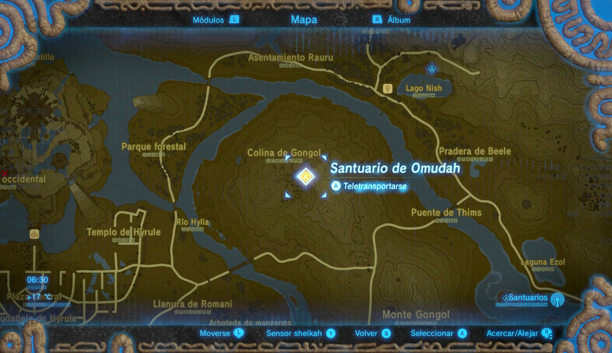
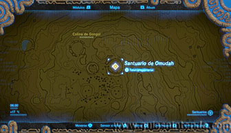
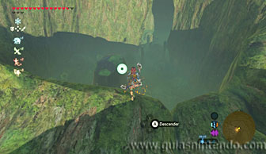
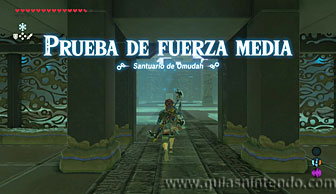
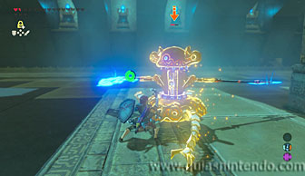
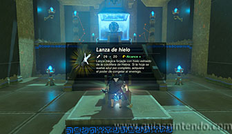

Puedes entrar en este santuario desde que llegas a la región de la torre de la llanura. Está al este del Castillo de Hyrule rodeado de un gran círculo de piedra.

A pesar de estar escondido, puedes acceder a él si lo localizas en la Colina de Gongol sin necesidad de completar ninguna prueba o abrir la entrada a una cueva.

En el interior debes derrotar a un miniguardián 3.0. Es un nivel mayor al resto de miniguardianes que encuentras en otros santuarios de esta región, pero a estas alturas no te debería costar derrotarlo.

Antes de llegar al altar puedes abrir un cofre que contiene una Lanza de hielo. Cuando llegues al altar podrás examinarlo para obtener un símbolo de valía.
